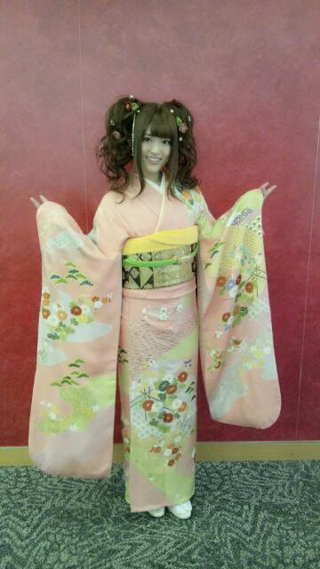

2013/0116Wed大人にはなりたくないっ(o・・o)
さゆりんごっっ(o・・o)
私、松村沙友理は成人いたしました！！
びっくり( ；∀；)
自分でも信じられへん( ；∀；)
２０歳にみえやんって
とてつもなく言われた( ；∀；)
うちも２０歳って
もっと大人やと思ってた(>_<)
ですが！
振袖も着させていただき
乃木神社で成人式もして
握手会では綺麗な服も用意してもらって
ありがたや〜(;_;)な感じです(>_<)
ほんまにね
女の子は皆そうやと思うんやけど
松村はね、ずーっとずーっと
成人式がね楽しみでね
振袖どんなん着よ〜とか
髪型どうしよ〜とか
ずーっと思っててね
そんなときに乃木坂に入って
東京に来ちゃったから
どうなるんやろって思ってたんやけど
すっごい沢山の方に御祝いしてもらって
松村感激なんよー(;_;)
大好きなピンクの振袖で、
大好きなリボンの帯にしてもらって
髪の毛も派手に可愛くしてもらって
お花もいっぱいつけて
めっちゃはっぴー＼(^^)／
写真はこちら！

はっぴーな顔ですわ！
みんなにつっこまれた髪型は
ギャル風ではなく
メルヘンなの！！！！！
頭がお花畑なの！！！！！
松村はすごく気に入ってます(*^^*)
スタッフさんには
お菓子についてるオモチャみたいと
言われました( ；∀；)
なんでや！
そして、大人の色気がほしいのです。
お色気ムンムンになりたいのです！
クレヨンしんちゃんに出てくるような女性になりたい！！
しんちゃんに好かれるような！
壇蜜さんはちとレベルが高い女性なので
皆に無理や無理やと言われてしまいました(;_;)
同い年の３人はやっぱり乃木坂でも
お姉さんな方たちなので
松村もそうなれるように頑張ります(。・ω・。)ゞうはは
なんかここまで
アホなことしか書いてない気がしますな！
それほどに浮かれ松村になってます(>_<)
握手会では沢山の御祝いの言葉ありがとうございます( ；∀；)
大人になりすぎないで
私なりに頑張ります。
未来には楽しいことが待ってるんやと
信じて進んでいきましょう！
人としてもアイドルとしても
まだまだ未熟な点ばかりですが
これからもよろしくお願いします♪
ほなら、またねー(*^^*)
さゆ蜜でしたっっ(o・・o)
2013/01/16 11:12


コメント(733)
そして、成人おめでとう\(//∇//)\
さゆりんの振袖姿めっちゃかわいい\(//∇//)\
次のシングルの握手会行くねー！
めっちゃ楽しみ！
さゆりん大好き！
本当20に見えないね～
壇蜜 笑
目指そうぜ！
振袖めっちゃにあってたよ
さゆりんがセクシーになるの想像できないな（笑）
さゆ蜜これからも頑張ってね＼(^o^)／
メガシャキガムで歌ってるのこの歌詞であってる？
↓
ねぇシャキッとしてちょうだい
私を本当に好きならば
虜にするその瞳で夢を語ってみて
ねぇシャキッとしてちょうだい
誰かに奪われないように
私のハートをつかんだまま
私を見てて～♪
振り袖姿可愛い(#^.^#)
Zipで成人してる4人見た～(ノ´∀｀*)
振り袖っていいなぁ～(*´∀`)♪
俺も今年成人迎えたんで、
これからも頑張りましょうd=(^o^)=b
では、今日も頑張って( ^-^)ノ∠※。.:*:・'°☆
成人おめでとう♪
PONで振り袖姿見たよ！
あの髪型は子供か！！って思った(笑)
うん、ただ言いたかっただけ(笑)
次は絶対行くんでさゆりんごパンチお願いします。
テレビで取り上げられてたね。見てて笑ってしまった…(^_^;)
少しくらい浮かれてもいいんじゃないかな？大人の自覚持ってメリハリつけてればね。
とにかく、おめでとう！
成人おめでとう！
まあ絵本のメッセとかで書いたから特に今更何もいいまへん
乃木神社の成人式よかったよ
乃木神社はたまたま東京着いたらやってただけやから、たまたまな
まあ運命って言ったら運命やな←
目の前で見れて良かった
絵本見てくれたかなあ？
伊藤まりかはおふざけなんで許してな
あとから見たら失敗やったわ(笑)
さゆ蜜さん
これからもよろしくお願いしますm(_ _)m
じゃあ仕事に戻るわ
ほなねﾉｼ
同じく僕も二十歳になったよー(*^^*)
大人の仲間入りやねー
振り袖姿かわいい(//∇//)
さゆ蜜はあかん(笑)
振袖のさゆりんごテレビで見てた(^O^)
似合ってましたよ、ぴんくの振袖♪
これからも応援し続けます(｀･ω･)ゞ
成人おめでとう‼
髪型すごいな(O_O)
無理して大人にならんでも
毎日頑張ってたら勝手に大人になってるよ。
なんかいいこと言うてもうた笑
正直俺もさゆりんと同じく大人になりたくないよ〜＿|￣|○
まあお互い成人おめでとうだね
さゆりん成人おめでとう
byともひろ
これからもずっと今のままのさゆりんでいてほしいです！
やっぱり振袖いいよね！！
私は去年終わってしまったけど
また着てみたいなと思うわ～～
んじゃまたねん
麻衣
おめでとう。(^_^*)
初コメかな？
最初ニュースで目標は壇蜜って見て
びっくりしたわ(笑)
ザ・さゆりんご
って感じ！
成人おめでとう(´∀｀)
りんご姫の
個握の服装写真アップしてほしいな！
さゆりんの振り袖姿やばいわ(o・・o)
セクシーなさゆりん期待してるね( 〃▽〃)
御成人おめでとうございます＼(^_^)／
ますますの、ご活躍を応援しています～
＼(^_^)／
さゆりん、もう成人ですか！
うん、ごめんね(笑)
20歳に見えないよ(*´･ω･`)
乃木坂二期生、応募しました！
いつ審査結果が来るのか…(*´･ω･`)
乃木坂入って、さゆりんと仲良くなりたいです///
関西人同士、仲良くできそう＼(^-^)／
どっちがツッコミ？ボケー？(笑)
初コメでした(*´｀*)
お互い成人おめでとうだね＼(^o^)／
俺も地元で成人式いってきたよ!!
雪やばくて埼玉スーパーアリーナから帰れなかった(T^T)
だからのりでエヴァの映画みてきたよw
なんか良く分からなかったわw
エヴァ難しいねw
あ、あとスッパイマンは沖縄の有名な土産だったみたい!!
ジャスコとかに売ってるんだって＼(^o^)／
さゆ蜜さん!!
リンゴ姫だからリン蜜さん!!(笑)
成人おめでとう!!
振り袖似合ってんなー！
これから色気が出てくるさゆりんも
すげー楽しみ！
でも今のさゆりんのパワーがあれば
色気なんいらんて!!
二十歳のさゆりんも
さゆりんごパンチ全開で！
blog更新ありがとう！
20歳に見えないなんて、さすが13歳のりんご姫！
大丈夫、ちゃんと20歳に見えますよ。
しんちゃんに好かれる女性かぁ…わかりづらいね（笑）
てか、さゆ蜜って完全に壇蜜さん目指してるじゃん（笑）
さゆりんの頭お花畑なんや(笑)
浮かれすぎてて今回のブログ超おもろいやん！
まいやんがさゆりんにセクシー担当は渡さへん言うとったからライバルやな！
めっちゃ低いところでの争いやけど(笑)
壇蜜たっぷりのさゆりんごの今年一年が良い年になりますように！
ほなね！
こんにちは(^◇^)┛
さゆ蜜(^O^)
新成人おめでとう(^_^)v
大人に成りきれないいつまでも可愛いまっちゅんで、いて下さいm(_ _)m
後、いこまざらしの事よろしく頼みますo(^-^)o
へばっまんず！?
これからりんごは卒業してさゆ蜜っすか＾＾
あれ、りんご姫って13歳じゃなかったっけ。
成人おめでとう。
頭おもしろいよ、
いや、かわいらしいよ。
お色気ムンムン、がんばれよっ。
ん～さゆ・・・。
13歳りんご姫じゃないの？
で結局どっち？(笑)
まぁさゆのなりたい方になればいい。
俺は１ファンとして応援する事しか出来へんし
さゆが信じた道を行けばいいと思うよ～
俺は大人のさゆの方が好き。
色気どうのこうのは別にどぉでもいいんやけど
もうちょっと落ち着いたさゆが見たいかな？
まぁあれやわ
さゆ！成人おめでとう♪
俺も成人になった^^
こんにちわ
成人おめでとう
振り袖姿
キュートだねー
可愛いー
こりゃあ
きらジョンイルも
惚れ直すわー
かずみんも
来年
超絶天使
可愛いだろーなーw
こないだは
握手で
リンゴちゃんに
変な事
言っちゃったよねー
ごめんなさい！
リンゴちゃん
体調大丈夫？
気を付けてね
あと路面凍結
滑って
アメイジングしないようにねw
また
握手行くんで
よろしくお願いします
これからも
頑張ってー
じゃあ
またねー
ノシー
成人おめでとーーー！！！
振袖めっちゃ似合ってる綺麗！\(//∇//)\
髪型すんごい派手やね（笑）
すごい大人って感じがします。
んじゃ授業集中しまーす。
ばぃばぃ( ´ ▽ ` )ﾉ
さゆりん色気ゼロだし(￣ー￣)
でも可愛いくておもろいから
今のままのさゆりんが一番イイ～♪( ´▽｀)
二十歳なんてまだまだ子供だねぇ(^.^)
二十歳になって何か特別なことした？
松村なんか酒強そーだよね(^-^)
ぢゃばね(^.^)
どーも、ぴよすけです。
成人おめでとう＼(^o^)／
さゆりんｷﾞｬﾙ風だな～と思てたら
ｷﾞｬﾙ風じゃなくてﾒﾙﾍﾝなのね(*^^*)
なるほど＼(^o^)／笑。
人生で一回きりの成人式ですし
うかれ松村で上等ですよ(*^*)
振袖似合ってますね(^-^)
ぴんく(^^)
可愛すぎます＼(^o^)／
壇蜜さんの色気はいきすぎですよ～(;o;)
さゆりんは今のままでいいんです＼(^o^)／
今のさゆりんが好きです(^^)v
では、
ﾃｽﾄ期間なんでそろそろ(^-^)
僕も来年成人式です(*^^*)
ぴよすけ47
さゆりんこんにちごっ(o^^o)
成人式おめでとっ(^^*)
いやー大人の色気ムンムンだったねー（笑）
でもおれは、１３歳のりんご姫のままでいてほしいなっo(^▽^)o
さゆりん愛してるぜっ(#^_^#)
じゃねっヾ(o´∀｀o)ﾉ
後見人(保護者)も不要となり、少年法の適用もなくなり、全て自
分の判断で行えるようになったと共に、結果責任は全て自分に帰っ
て來る(昨年の八月からだけど)。
大人になる事は、何でも自分の判断で行えると共に、全ての責任を
自分で負わなければならないと云う事だよ。
選挙権も与えられるし、国の行く末にも責任を持たないといけな
い。
大人になると云う事は大変な事だね！
お酒を飲めるので、三人で祝杯をあげたらいいね(ななみんは未成
年なので、お酒を飲ましたらいけないので、他の三人で)！
さゆりんごもこの機会に、乃木坂の五人のお姉さんとして、他のメ
ンバー達の世話をしてやったのいいね！
一つ言わせてもらえば、さゆりんごの着物姿は実に可愛かったが、
髪に付けている多数の飾りはもう一つだったね(余りに付け過ぎて
いた)！
もっとシンプルなものを付ければ、更に素晴らしかったね！
やっほー＼(^^)／
スケちゃんやで(^o^ゞ
成人おめでとー＼(^^)／
そして、個別握手会お疲れ様ー(*^^*)
さゆりんの振り袖姿はめっちゃ可愛いよ(^^)d
一番輝いてる(^^)d
個別の時に直接おめでとうを言えてよかったー＼(^^)／
さゆりんのメルヘンな髪型も素敵すぎてときめいてしまうー(*^^*)
さゆりんほんまに可愛いよ(*^^*)
そして、セクシーで色気のある女性になってなー＼(^^)／
さゆりんなら必ずなれる(*^^*)
可愛いさゆりんも全部大好きやねんけどな(*^^*)
ほんまに成人おめでとー＼(^^)／
また来月の個別もよろしくね(*^^*)
良い意味で大人になりすぎないで、これから先の楽しいことのために頑張ろなー(*^^*)
ずーっと支えてるからね(*^^*)
さゆりんほんまに大好き(*^^*)
何か今回は文がまとまってなくてごめんよー(TT)
いつもブログの更新ありがとうね＼(^^)／
今日もさゆりんにとって笑顔で明るく過ごせるめっっっっっっちゃ幸せな日になりますように☆
そして、さゆりんの夢と目標と願いが絶対に叶いますように。
ほな、またねー＼(^^)／
さゆりんのことだけがずーっとずーっと大好きなスケちゃんでした(^o^ゞ
さゆりんおめでと～♪
可愛いから問題ないよ！笑←
めちゃめちゃ可愛い(>_<)♪♪
りんごちゃんもこれで大人の仲間入りだね＼(^o^)／
振り袖すごく可愛いよさゆりんが着るからなおさら
握手会でまたよろしくねと
fromTAKUYA
さゆりーん☆
成人おめでとう!!(>▽<)
成人の日は個別握手会があるから「ちゃんと成人式できるのかな、大丈夫かな？」って心配したけど、成人式をあげられて良かったね!!
ピンクの振袖、いつもと違う髪型もすごく似合ってて可愛かったよ☆
「さゆりんにとっていい１年になりますように」
お色気担当の「さゆ蜜」応援してるよ!!(≧▽≦)
今月は「１月５日の全国握手会３回」と「１月６日の個別握手会、第１部～第３部」と「１月１４日の個別握手会、第１部～第３部」まで参加したけど、１４日の第２部でさゆりんをいじりたくなって「今度、さゆりんじゃなくて違うメンバーと握手してもいい？」って嘘ついてごめんね(ノ_・。)でも、ちゃんと反応してくれてありがとう☆
第３部でも言ったけど、自分はさゆりんしか好きじゃないから安心してね☆
さゆりんが「信頼」って言ってくれて嬉しかったよーこれからもさゆりん推し!!
握手会が終わったら急に寂しくなってまたさゆりんに会いたくなったよー次は２月１６日の個別握手会だけど、それまで頑張って楽しみにしてるね☆(´ー`)ノ
◇◆◇◆◇◆◇◆◇◆◇◆◇◆◇
Tomoya.ともやっぴ
いや、さゆ蜜様へ(笑)
握手会はお疲れ様でした！
みんなにお祝いされてよかったね。
4部と5部の間に言ったことはあとで教えてくれたけど、わかったような、わからんような...
まだ道が凍ってるから、すべりんごにならないようにね。
話はすべりんごでもええねんで(笑)
握手会まで１ヶ月あるけど、どれだけ大人になってるか楽しみにしてるな～！
ほな、またね！
さゆりんの振袖可愛かったなー(*^^*)乃木神社見に行ったよ☆壇蜜さんはちょっとレベル高すぎると思う 笑
髪型はキャバ嬢じゃなくねお花畑なんだね(￣▽￣)
2013年はさゆりんのお色気に期待してるわ♪でも多分無理だろなあ 笑
さゆ蜜=壇蜜のもじり、さゆりんごの甘い蜜
ダブルミーミング！笑
それじゃ、バイッ☆彡
さゆりんの振り袖めっちゃきれいだねー！
最近、全然さゆりんなに会えてないから会って直接おめでとう言いたいなー！
色気をつけたいのかー！
どうにしたら色っぽくなるんかね？
自分は今のさゆりんの雰囲気が好きだよ！
乃木坂の顔としてこれからも輝いていてほしいなー(^o^)/
頑張ってね！！
俺のブログで個別レポ書いたから時間あるとき見てなぁ～！
見る方法分からんかったら、かなりん聞いてな！
おめっとー！
20歳ってもっと
高い高い壁だと思ってました^_^
自分も来年成人式なんで
自覚持って行動しやす！
コメントする